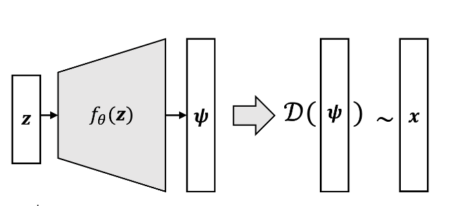

Introduction
variational auto-encoder는 generative model로서 intractable한 posterior를 포함하는 latent variable이 있고 large dataset에도 잘 동작한다. 이는 1)variational lower bound를 reparamet-
erization을 통해 샘플링하고 SGD를 사용하며 2)posterior를 variational inference로 구한 뒤 encoder(inference model)로 학습시키기에 가능하다. 이번 포스트에서는 논문에서 사용된 방법들에 대해서 자세하게 수식적으로 설명한다.
Background
Latent Variable Model
latent variable model은 관측가능한 데이터를 변수와 관련짓는 통계학적 모델이다. 이때의 변수를 latent variable이라고 하며 데이터가 어떻게 생성되는지에 영향을 미친다. latent variable model에서 데이터가 만들어지는 과정은 다음과 같다.
(Data Generation Process)
1. latent variable \(\bf{z}\)가 \(p(\bf{z})\)에서 먼저 sampling된다.
2. observed data \(\bf{x}\)가 그 후 \(p({\bf{x}}|{\bf{z}}) = p({\bf{x}}|f_{\theta}({\bf{z}}))\)에서 sampling된다.
- \(\bf{z}\)의 dimension은 일반적으로 \(\bf{x}\)의 dimension보다 작다고 가정한다.
- 여기서 \(f_\theta(\bf{z})\)는 \(\theta\)를 parameter로 갖는 vector function으로 여러개(또는 하나의)의 output을 가집니다.
예를 들어 학교에 “고양이”를 주제로 하여 과제를 제출해야 한다고 가정해보자. latent variable은 교수님이 지정한 글자크기,글자간격,글자수,주제(고양이)로 비유할 수 있으며 제출할 과제는 이러한 잠재변수들이 결과를 미쳤을 것이라 볼 수 있다. 특히 주목할 점은 latent variable \(\bf{z}\)가 그대로 영향을 미칠 수도 있고 적절한 transform(function)을 거친 \(f_{\theta}(\bf{z})\)가 영향을 미칠 수도 있다는 것이다. 이는 주제가 “고양이”로 선정되었어도 누군가는 “고양이에게 줘야하는 음식”으로 다른 누군가는 “고양이의 행동분석”으로 과제를 제출하는 것에 비유할 수 있다.
Generative Model
Generative Model(생성모델)은 observed data와 유사하면서도 다른 new samples을 생성해내는 것이 목적이다. 이를 다시말하면 Generative model의 목적은 \(p_{data}(x)\)를 구하는 것이라고 할 수 있다. 관측된 데이터를 생성하는 확률분포 \(p_{data}(\bf{x})\)를 알면 sampling을 통해서 생성해낼 수 있기 때문이다.
Problem Setting
\(p_{data}(\bf{x})\)는 어떻게 구할 수 있을까? VAE에서는 Maximum likelyhood estimation으로 확률분포를 구하고자 한다. 구체적인 단계는 다음과 같다.
(Probability density estimation)
1. \(p_{data}(\bf{x})\)를 근사할 likelyhood \(p(\bf{x})\)를 가정
2. likelyhood가 어떤 확률분포를 따를지 결정(ex 정규분포,베르누이분포 …)
3. likelyhood를 가장 크게하는 parameter를 \(p(\bf{x})\)의 parameter로 설정
4. \(p({\bf{x}}) \approx p_{data}({\bf{x}}) \rightarrow p(\bf{x})\)를 \(p_{data}(\bf{x})\)대신 사용!!
- 먼저 \(p(\bf{x})\)를 구해보자. Generation process가 latent variable model이라고 하면 다음과 같은 explicit form으로 적어줄 수 있다.
\[p_{\boldsymbol{\theta}}({\bf{x}}) = \int_z p({\bf{x}}|{\bf{z}})p({\bf{z}})d{\bf{z}} = \int_z p({\bf{x}}|{f_{\theta}(\bf{z})})p({\bf{z}})d{\bf{z}}\]
- \(p(\bf{x})\)를 결정하는 것은 적분안의 함수를 모두 결정하는 것과 같다. VAE에서 \(p({\bf{x}}|f_{\theta}({\bf{z}}))\)는 \(\bf{x}\)가 실수전체에서 연속적일 경우 정규분포로 0과1사이에서 연속적일 경우 베르누이분포로 가정한다. \(p({\bf{x}}|f_{\theta}{(\bf{z})}) = \mathcal{N}({\bf{x}}|f_{\theta}(\bf{z}),\sigma^2 * \bf{I})\)로 가정하고 전개해보자.
- \(f_{\theta}(z)\)가 정규분포의 parameter(평균)이므로 명시적으로 \(\boldsymbol{\theta}\)표시. $ p({}) p_{}({})$
- \(f_{\theta}(z)\)는 사실 Deep Nueral Network이자 매우 복잡한 함수임
여기서 latent variable의 distribution인 \(p(\bf{z})\)만 잘 결정해주면 우리는 monte carlo method를 사용하여 likelyhood를 근사하고 Gradient Ascent를 사용하면 될 것이다. 그러나 이는 쉽지않은 조심스러운 문제이다.
예를 들어서 숫자이미지를 생성하는 latent variable을 생각해보자. 단순하게 생각하면 어떤 숫자를 적어야 하는지에 관한 변수가 있지만 이 외에도 굵기,각도,스타일등의 여러가지 우리가 알지못하는 변수들이 데이터의 생성에 영향을 미칠 수 있다. 또한 각도가 휘어있는 숫자는 누군가가 빨리 쓰다가 그랬다고 생각할 수 있으며 이는 상당히 얇은 굵기를 만들어 낼 수도 있으므로 변수들간에 상관관계도 존재할 수 있다. 요약하자면 latent variable의 distribution은 매우 복잡하다는 것이다.
그렇다면 VAE에서는 어떻게 \(p(\bf{z})\)를 가정할까? 그냥 단순히 평균이 0이며 상관관계가 존재하지 않는(공분산이 존재하지 않는) 가장 단순한 정규분포로 가정해버린다.
\[{\bf{z}} \sim p({\bf{z}}) = \mathcal{N}({\bf{z}}|0,\bf{I})\]
당연하게도 이렇게 단순하게 분포를 가정해버린다면 복잡한 latent variable의 분포를 전혀 대표하지 못할 것 같다라는 생각이 든다. 왜냐하면 너무 쉬운 latent variable의 distribution을가정했기 때문이다. 여기서 복잡한 함수로서 역할을 하는 Deep Neural Network가 이 문제를 해결해줄 수 있다. 조금 더 세부적으로 확인해보자.
\[\begin{aligned} p_{\boldsymbol{\theta}}({\bf{x}}) &= \int_z p({\bf{x}}|{f_{\theta}(\bf{z})})p({\bf{z}})d{\bf{z}}\\ &= \int_z \mathcal{N}({\bf{x}}|f_{\theta}({\bf{z}}),\sigma^2 * {\bf{I}})p({\bf{z}})d{\bf{z}} \end{aligned}\]수식으로 위의 문제를 다시보면 \(f_{\theta}({\bf{z}})\)가 만약 극단적으로 Identity mapping이라면 정규분포에서 sampling된 \(\bf{z}\)가 sampling이 되어 확률분포의 condition이 된다.하지만 실제로 관측된 Data는 정규분포가 아니라 어떤 복잡한 확률분포로부터 sampling한 latent variable이 condition이 되는데 identity라면 이를 전혀 반영하지 못한다. 그러므로 vae에서는 \(f_{\theta}({\bf{z}})\)를 Deep Nueral Network를 사용한다.

위의 그림에서 \(\bf{z}\)는 DNN의 input이며 \(f_{\theta}({\bf{z}})\)는 output이 된다. 여기서 중요한 두가지는 첫째로 DNN인 \(f_{\theta}({\bf{z}})\)뿐만 아니라 처음 몇개의 히든레이어도 복잡한 함수의 역할을 할 수 있다는 것이고 두번째는 변수가 임의의 함수를 통과하면 달라진 분포를 갖는다라는 것이다.

- \({\bf{z}} \sim \mathcal{N}(z|0,\bf{I})\)
- \(g({\bf{z}}) = \bf{z/10 + z/||z||}\)
예를 들어 위의 그림을 보자. 왼쪽은 단순히 \(\bf{z}\)가 Gaussian distribution을 따르므로 sample을 확인해보면 근사적으로 Gaussian 분포를 이룬다. 오른쪽 그림은 DNN,Hidden layer와는 다르게 그리 복잡한 함수는 아닌 단순한 \(g({\bf{z}})\)에 대한 함숫값들의 분포이다. 비교적 간단한 mapping임에도 함숫값의 분포는 ring 형태를 이루는 것으로 보아 \(g(\bf{z})\)는 \(\bf{z}\)보다는 좀 더 복잡한 분포를 갖는다는 것을 알 수 있다. DNN에서는 이보다 더 복잡하다. 여러개의 hidden layer 에 대한 output은 \(\bf{z}\)에 대한 훨씬 더 복잡한 함수의 함숫값이므로 단순한 ring 형태뿐만 아니라 더 복잡한 분포를 따르는 확률변수라고 생각할 수 있다.
이렇게 DNN에서 존재하는 hiddenlayer의 output은 더 복잡한 분포를 가지는 확률변수이므로 새로운 latent variable의 역할을 한다. 새로운 latent variable로부터 나온 값이 이제 활용되어 나머지 hidden layer를 통과하며 새로운 데이터를 만들어낼 수 있다. 한 가지 신기한 점은 분포의 모양은 DNN의 학습을 통해 결정된다는 사실이다. training set에 있는 데이터와 비슷한 sample을 만들어내기 위해서 적절한 함수를 학습하여 적절한 분포를 가진다.
여기까지 \(p(\bf{z})\)는 그냥 단순한 정규분포로 사용할 수 있음을 알아봤다. 그렇다면 목적으로 되돌아가서 likelyhood \(p(\bf{x})\)를 구하고 MLE를 써보자. 여기서 likelyhood는 적분식으로 computable formular가 아니기 때문에 함수(확률변수)를 computable formular로 바꿔줌과 동시에 표본평균으로 근사하는 monte carlo method를 사용한다.
\[\begin{aligned} p_{\boldsymbol{\theta}}({\bf{x}}) &= \int_z \mathcal{N}({\bf{x}}|f_{\theta}({\bf{z}}),\sigma^2 * {\bf{I}})p({\bf{z}})d{\bf{z}}\\ &{\approx}\frac{1}{n}\sum_{n=1}^{N}\mathcal{N}({\bf{x}}|f_{\theta}({\bf{z}}_n))\\ \end{aligned}\]\[\text{where }{\bf{z}} \sim \mathcal{N}({\bf{z}}|0,{\bf{I}})\]

그런데 여기서 문제가 발생한다. MLE에서 likelyhood를 최대화 하는 parameter는 \(p({\bf{x}}|f_{\theta}{(\bf{z})}) = \mathcal{N}({\bf{x}}|f_{\theta}(\bf{z}),\sigma^2 * \bf{I})\)에 가정했으므로 MSE로 계산이 되는데 이것이 문제가 된다. 인간이 직관적으로 보기에 (a)에서 약간만 이동한듯한 (c)와 같은 이미지를 생성하도록 parameter가 학습되어야 하지만 그렇지않고 실제로는 (b)와 같은 이미지를 학습에 더 많이 반영한다는 것이다.이는 (a),(c)사이의 L2-distance가 (a),(b)사이의 L2-distance보다 더 멀기 때문이다. 한 가지 떠오르는 방법은 Metric을 MSE로 쓰지 않는 방법이다. 하지만 이렇게 된다면 domain마다 따로따로 설정해줘야하며 그 기준을 정하는 것은 쉽지 않다는 한계가 존재한다.
또다른 문제는 Monte carlo method로 계산하기 위해서는 high dimensional space에서는 샘플링 횟수 n이 무한히 많이 필요하다는 것이다. 주사위 게임을 생각해보면 보면 가능한 결과가 6가지 이므로 각각의 값에 대한 확률을 추정하는데에는 비교적 적은 시행이 필요하다. 하지만 위와 같은 숫자(Mnist data)의 경우 \(x \in \mathbb{R}^{28 \times 28}\)이므로 가능한 모든 경우의 수가 매우 많기 때문에 각각의 값에 대한 확률을 추정하는데 매우 많은 샘플(n)이 필요하다.(확실하진 않다-뇌피셜)
Method
위의 두 문제를 해결하려면 어떻게 해야할까? 우리가 관측된 데이터 \(\bf{x}\)를 더 잘 재현,생성 할 수 있는 \(\bf{z}\) 를 샘플링할 수 있는 이상적인 확률분포 \(p(\bf{z|x})\)를 알 수 있다면 metric을 바꾸지 않음에도 figure3 - (b)같은 이미지가 덜 생성되어 않아 학습에 덜 반영되고 figure3 - (c)와 같은 관측된 데이터에 대한 이미지가 나와 비교적 샘플링 횟수를 줄이면서 학습할 수 있을 것이다.
Variational Inference
\(p(\bf{{\bf{z|x}}})\)는 어떻게 구할 수 있을까? 논문에서는 variational infernece를 사용한다.
\[p({\bf{z|x}}) = \frac{p({\bf{x|z}})p({\bf{z}})}{\int_{\bf{z}}p({\bf{x|z}})p(\bf{z})d{\bf{z}}}\]
variational inference에서 풀고자 하는 문제는 posterior를 구하는 것이다. posterior인 \(p(\bf{z|x})\)는 일반적으로 intractable하다. 왜냐하면 분모에 있는 \(\bf{z}\)에 대한 적분이 일반적으로 너무 고차원이여서 계산이 불가능하기 때문이다. variational inference는 \(p(\bf{z|x})\)를 근사적으로라도 구하기 위해 \(q_{\boldsymbol{\phi}}(\bf{z|x})\)를 정의한 후 이를 \(p(\bf{z|x})\)에 충분히 가깝게 다가가도록 하는 방식을 취한다. 이는 수학적으로 두 분포간의 차이를 알려주는 KL-divergence를 최소화하는 \(q_{\boldsymbol{\phi}}(\bf{z|x})\)를 구하는 문제이다. 여기서 \(q_{\boldsymbol{\phi}}(\bf{z|x})\)는 임의적으로 정할 수 있는 확률분포임에 주목하자. \(q_{\boldsymbol{\phi}}(\bf{z|x})\)는 우리가 잘 알고있고 더 적은 파라미터를 가지며 계산이 쉬운 편리한 함수로 가정하여 문제를 쉽게 풀 수 있게 해준다.
(definition of KL-divergence) \[\begin{aligned} \text{D}_{KL}[q_{\boldsymbol{\phi}}({\bf{z|x}})||p({\bf{z|x}})] &:= \int_zq_{\boldsymbol{\phi}}({\bf{z|x}})\text{log}\frac{q_{\boldsymbol{\phi}}({\bf{z|x}})}{p({\bf{z|x}})}dz \\ \end{aligned}\] (variational inference) \[\begin{aligned} &{\hat{q_{\boldsymbol{\phi}}}} = \underset{q_{\boldsymbol{\phi}}}{\text{argmin}}\,\text{D}_{KL}[q_{\boldsymbol{\phi}}({\bf{z|x}})||p({\bf{z|x}})] \end{aligned}\]여기서 \(q_{\boldsymbol{\phi}}\)는 \(\boldsymbol{\phi}\)가 parameter이므로 위의 KL-divergence를 최소화하는 \(q_{\boldsymbol{\phi}}\)를 찾는 문제는 최소화하는 \(\boldsymbol{\phi}\)를 찾는것과 동일하다. 즉,다음과 같다.
(variational inference) \[\begin{aligned} &{{\boldsymbol{\phi}}} = \underset{{\boldsymbol{\phi}}}{\text{argmin}}\,\text{D}_{KL}[q_{\boldsymbol{\phi}}({\bf{z|x}})||p({\bf{z|x}})] \end{aligned}\]KL-divergence를 log likelyhood에서 찾을 수 있다. log likelyhood를 전개하면 다음과 같다.
(log likelyhood expansion)
- ELBO(\(\mathcal{L}\))는 evidence lower bound의 약자로 likelyhood(evidence,용어만다르다)의 하한(lower bound)이다. 즉,모든 x에서 evidence는 모든 ELBO보다 크다.
- \(\text{log}\,p({\bf{x}})\) = evidence = log likelyhood이다.(헷갈리지 말자…)
- 자세한 ELBO에 대한 증명은 Appendix 참고
윗 식을 보면 결국 KL-divergence를 maximize하는 \({\boldsymbol{\phi}}\)를 찾는 것은 ELBO를 minimize하는 \({\boldsymbol{\phi}}\)를 찾는 것과 같은 문제다.
\[\begin{aligned} \hat{\boldsymbol{\boldsymbol{\phi}}} = \underset{\boldsymbol{\boldsymbol{\phi}}}{\text{argmax}}\,\mathcal{L(\boldsymbol{\boldsymbol{\phi}},{\boldsymbol{\theta}};{\bf{x}})} \end{aligned}\]정리하자면 목적은 \(p(\bf{z|x})\)를 구하는 것이었다. 이는 variational inference에서는 우리가 알고 있는 계산하기 편리한 형태인 \(q_{\boldsymbol{\phi}}\)를 \(p\)와 비슷하게 만드는 방법이었고 수학적으로 이는 KL-divergence를 minimize하는 \(q_{\boldsymbol{\phi}}\) 또는 \(\boldsymbol{\phi}\)를 찾는 것과 같았으며 계속해서 수식전개하면 결국에는 ELBO를 maximize하는 \(\boldsymbol{\boldsymbol{\phi}}\)를 찾는 문제와 같았다. 결과적으로 보면이제 ELBO를 maximize하는 optimization문제가 되었음을 알 수 있다. 여기까지 3번 MLE로 발생하는 문제들을 막기위해 이상적인 sampling함수(posterior)를 얻는 과정을 풀었다. 이제 MLE를 풀기만 하면 된다.
Maximum Likleyhood Estimation
위에서 사실은 살짝 MLE로 \(\theta\)를 언급했었다. 구체적으로 하려는 것은 다음과 같다.
\[\begin{aligned} \hat{\theta} = \underset{{\bf{\theta}}}{\text{argmax}}\,\text{log}\,p_{\boldsymbol{\theta}}(\bf{x}) \end{aligned}\]- log likelyhood를 maximize하도록 바꿈.
여기사 다시 나타나는 문제는 \(p{\bf{({\bf{x}})}} = \int_z p({\bf{z}})p({\bf{x|z}})d{\bf{z}}\)이다. 위에서도 언급했듯이 이는 \(\bf{z}\)에 대한 매우 고차원 적분으로 explict하게 구할 수 없으며 Monte carlo method의 경우에도 차원이 너무 커서 추정하는데 매우 오랜시간이 걸리므로 거의 불가능에 가깝다. 여기서 문제를 약간 우회하여 \(\text{log}\,p(\bf{x})\)의 lowerbound인 ELBO를 maximize하는 문제로 바꿔보자. evidence의 lowerbound인 ELBO를 maximize하면 evidence자체도 어느정도 maximize될 것이다.
\[\begin{aligned} &\hat{\theta} = \underset{{\bf{\theta}}}{\text{argmax}}\,\text{log}\,p(\bf{x}) \approx \underset{{\bf{\theta}}}{\text{argmax}}\,\mathcal{L}({\boldsymbol{\theta}},\boldsymbol{\boldsymbol{\phi}};{\bf{x}}) \\ \end{aligned}\]여기서 알 수 있는 것은 문제가 하나의 ELBO에 대한 \(\phi,\theta\)의 maximization 문제로 바뀌다는 것이다. 정리하자면 이 문제만 풀게되면 우리는 **\(q_{\phi}({\bf{x|z}})\approx p({\bf{x|z}})\)인 이상적인 샘플링 함수인 posterior를 얻을 뿐만 아니라 MLE도 풀 수 있게 된다.
\[\begin{aligned} &\boldsymbol{\theta,\boldsymbol{\phi}}=\underset{{\boldsymbol{\theta,\boldsymbol{\phi}}}}{\text{argmax}}\,\mathcal{L}(\boldsymbol{\boldsymbol{\phi}},{\boldsymbol{\theta}};\bf{x})\\ \end{aligned}\]그러나 ELBO도 아직은 intractable한 적분이 포함되기 때문에 얼핏보면 풀 수 없는 상태처럼 보이지만 자세히 보면 ELBO는 우리가 가정한 여러개의 계산이 편리한 함수이므로 optimization이 가능한 형태임을 알 수 있다. 여기서 부터는 직접 ELBO를 풀어서 optimization을 해보자.
Solving Optimization Problem
먼저 ELBO와 우리가 알고 있는 사실들을 정리하자. 위에서 \(q_{\phi}\)는 임의적으로 정할 수 있는 계산하기 편리한 함수이며 여기서는 정규분포로 가정해보자.
(Goal) \[\begin{aligned} &\boldsymbol{\theta,\boldsymbol{\phi}}=\underset{{\boldsymbol{\theta,\boldsymbol{\phi}}}}{\text{argmax}}\,\mathcal{L}(\boldsymbol{\boldsymbol{\phi}},{\boldsymbol{\theta}};\bf{x})\\ \end{aligned}\] (ELBO) \[\begin{aligned} \mathcal{L(\boldsymbol{\boldsymbol{\phi}},{\boldsymbol{\theta}};{\bf{x}})}&:= \int_z\text{log}\left(\frac{p(\bf{z,x})}{q_{\boldsymbol{\phi}}(\bf{z|x})}\right)q_{\boldsymbol{\phi}}({\bf{z|x}})d{\bf{z}}\\ \end{aligned}\](Assumption)
\[\begin{aligned} &p({\bf{z}}) = \mathcal{N}({\bf{z}}|0,{\bf{I}})\\ &p({\bf{x|z}}) = \mathcal{N}({\bf{x}}|f_{\theta}(\bf{z}),\boldsymbol{\sigma^2}{\bf{I}})\\ &q_{\boldsymbol{\phi}}({\bf{z|x}}) = \mathcal{N}({\bf{z}};\boldsymbol{\mu,\sigma^2}\bf{I})\\ \end{aligned}\]여기서 ELBO는 다음과 같이 전개할 수 있다.(자세한 증명은 Appendix 참고)
(ELBO expansion)
\[\begin{aligned} \mathcal{L(\boldsymbol{\boldsymbol{\phi}},{\boldsymbol{\theta}};{\bf{x}})}&= \int_z\text{log}\left(\frac{p(\bf{z,x})}{q_{\boldsymbol{\phi}}(\bf{z|x})}\right)q_{\boldsymbol{\phi}}({\bf{z|x}})d{\bf{z}}\\ &=\mathbb{E}_{q_{\phi}({\bf{z|x}})}\left[\text{log}\,(p({\bf{x}}|f_{\theta}({\bf{z}})))\right] - D_{KL}(q_{\phi}({\bf{z|x}})||p({\bf{z}}))\\ \end{aligned}\]여기서 잠깐 전개된 ELBO를 살펴보면 많은 insight를 준다. 윗 식의 RHS의 첫번째 항을 \(\phi,\theta\)에 대해 maximize한다는 것은 \(\theta,\phi\)를 적절히 학습하여 \(q_{\phi}\)에서 sampling된 \(\bf{z}\)로부터 \(x\)를 다시 복원할 확률을 최대화 한다는 것으로 일반적인 Auto-encoder에서 reconstruction error를 최소화 하는것과 같다.** 여기서 두번째 항은 Regularization의 역할을 하는데 이는 posterior를 근사한 \(q_{\phi}(\bf{z|x})\)가 \(p(\bf{z})\)와 비슷하도록 유지하게 해주며 따라서 우리는 학습을 완료한 decoder에서 그냥 \(q_{\phi}\)인 encoder를 떼버리고 정규분포 \(p(\bf{z})\)에서 \(\bf{z}\)를 샘플링 한 후 Network의 input으로 주면 된다.
\[\begin{aligned} \mathcal{L}(\boldsymbol{\boldsymbol{\phi}},{\boldsymbol{\theta}},{\bf{x}}) &= \mathbb{E}_{Z\sim q}\left[\text{log}\,p({\bf{x,z}})-\text{log}\,q_{\boldsymbol{\phi}}({\bf{z|x}}) \right] \\ &= \int_z\left[\text{log}\,p({\bf{x,z}})-\text{log}\,q_{\boldsymbol{\phi}}({\bf{z|x}})\right]q({\bf{z|x}})d{\bf{z}} \end{aligned}\]이전에도 계속 문제였던 \(d\bf{{z}}\)가 또 등장한다. 그러므로 우리는 expectation을 구할 수 없다. 따라서 samping을 통해 expectation을 근사적으로 구하는 Monte carlo method를 사용한다. 이는 다음과 같다.
\[\begin{aligned} \mathcal{L}(\boldsymbol{\boldsymbol{\phi}},{\boldsymbol{\theta}};{\bf{x}}) &= \mathbb{E}_{Z\sim q}\left[\text{log}\,p({\bf{x,z}})-\text{log}\,q_{\boldsymbol{\phi}}({\bf{z|x}}) \right] \\ &= \int_z\left[\text{log}\,p({\bf{x,z}})-\text{log}\,q_{\boldsymbol{\phi}}({\bf{z|x}})\right]q({\bf{z|x}})d{\bf{z}} \\ &\approx \frac{1}{L}\sum_{l=1}^L[\text{log}\,p({\bf{x,z}}^{(l)}) - \text{log}\,q_{\boldsymbol{{\boldsymbol{\phi}}}}({\bf{z}}|{\bf{x}}^{(l)})] \end{aligned}\]\[\text{where } {\bf{z}}^{(l)} \sim q_{\boldsymbol{\phi}}({\bf{z}})\]
ELBO를 근사적으로 구했으므로 최적화를 위해 gradient를 구해야 한다. 먼저 \(\theta\)에 대한 gradient를 구해보자.
\[\begin{aligned} \nabla_{\theta}\mathcal{L}(\boldsymbol{\boldsymbol{\phi}},{\boldsymbol{\theta}};{\bf{x}}) &= \mathbb{E}_{Z\sim q}\left[\nabla_\theta\text{log}\,p({\bf{x,z}})\right]\\ &\approx \frac{1}{L}\sum_{l=1}^L\nabla_\theta\text{log}\,p({\bf{x,z}}^{(l)}) \end{aligned}\]- 뒷항은 \(\theta\)에 대해 parameterize되어있지 않으므로 미분과정에서 제거됨.
\(\theta\)에 대한 gradient는 전혀 문제없이 잘 구해짐을 알 수 있다. 하지만 문제는 \(\boldsymbol{\phi}\)에 대한 gradient를 구할 때 발생한다. \(f({\bf{z}}) = \text{log}\,p({\bf{x,z}})-\text{log}\,q_{\boldsymbol{\phi}}({\bf{z|x}})\)라 할 때 gradient는 다음과 같이 구해진다.(증명생략)
\[\begin{aligned} \nabla_{\boldsymbol{\phi}}\mathbb{E}_{q_{\boldsymbol{\phi}}({\bf{z})}}[f({\bf{z}})] &= \mathbb{E}_{q_{\boldsymbol{\boldsymbol{\phi}}(\bf{z})}} \nabla_{q_{\boldsymbol{\boldsymbol{\phi}}(\bf{z})}}\text{log}\,q_{\boldsymbol{\phi}}({\bf{z}}) \\&\approx \frac{1}{L}\sum_{l=1}^L f({\bf{z}})\nabla_{q_{\boldsymbol{\boldsymbol{\phi}}({\bf{z}})}}\text{log}\,q_{\boldsymbol{\phi}}({\bf{z}}^{(l)}) \end{aligned}\]갑자기 로그가 들어간 형태로 gradient가 구해진다. 이러한 gradient에 대한 추정량은 unbiased estimator이지만 high variance를 가진다고 한다. 그러므로 샘플링을 아주많이(거의무한하게)취하는 것이 아니면 이 값은 수렴하지 않는 값이므로 적당한 샘플링을 통해서 문제를 풀어야 하는 우리의 방식에는 맞지않는다. 그러므로 샘플을 대체적으로 취하는 방식인 reparameterization을 사용한다. 이를 사용하면 unbiased estimator를 얻을뿐만 아니라 low variance를 가진다. (더 자세한 논의는 링크에서 확인 가능)
(reparameterization trick)
\({\bf{z}}\)가 conditional distribution인 \(q_{\boldsymbol{\phi}}(\bf{z|x})\)를 따르는 continuous 또는 discrete random-variable일때 \({\bf{z}} = g_{\boldsymbol{\phi}}(\boldsymbol{\epsilon},\bf{x})\)인 g에 대해 deterministic한 random variable로 나타낼 수 있다는 것이다.(where, \({\bf{\epsilon}}\sim p(\boldsymbol{\epsilon})\))
그러므로 우리는 reparameterization trick을 사용해서 ELBO를 Monte carlo method를 통해 다르게 생각할 수 있다. 이렇게 ELBO를 구하면 Gradient estimator는 unbiased일 뿐만 아니라 low variance를 가진다.
\[\begin{aligned} \tilde{\mathcal{L}}^A(\boldsymbol{\boldsymbol{\phi}},{\boldsymbol{\theta}};{\bf{x}}) &= \mathbb{E}_{Z\sim q}\left[\text{log}\,p({\bf{x,z}})-\text{log}\,q_{\boldsymbol{\phi}}({\bf{z|x}}) \right] \\ &= \int_z\left[\text{log}\,p({\bf{x,z}})-\text{log}\,q_{\boldsymbol{\phi}}({\bf{z|x}})\right]q({\bf{z|x}})d{\bf{z}} \\ &\approx \frac{1}{L}\sum_{l=1}^L[\text{log}\,p({\bf{x,z}}^{(l)}) - \text{log}\,q_{\boldsymbol{{\boldsymbol{\phi}}}}({\bf{z}}|{\bf{x}}^{(l)})] \end{aligned}\]$$ {}^{(l)} = q_{}({}^{(l)},{}),{}p()
- A는 type A를 의미함.
논문에는 이러한 estimator말고도 다른 방법으로 구한 것도 있다. 이는 다음과 같다.
\[\begin{aligned} \tilde{\mathcal{L}}^B(\boldsymbol{\boldsymbol{\phi}},{\boldsymbol{\theta}};{\bf{x}}) = -D_{KL}(q_{\boldsymbol{\phi}}({\bf{z|x}})||p_\theta({\bf{z}})) + \frac{1}{L}\sum_{l=1}^L(\text{log}\,p_\theta({\bf{x}}|{\bf{z}}^{(l)}) \end{aligned}\]$$ {}^{(l)} = q_{}({}^{(l)},{}),{}p()
두번째 estimator를 통해서 ELBO를 maximization하는 최적화 문제를 푸는것이 왜 auto-encoder와 연결되는지 알 수 있다. ELBO를 maximize하려면 첫번째 term을 가능한 작게 해야 하는데 이는 observation을 보고 latent variable가 따르는 예측한 값이 얼마나 차이가 나느냐이다.(encoder의 성능?인 것 같다.)두번째 텀은 decoder가 얼마나 latenr variable에서 input space로 mapping을 잘 하느냐를 의미한다.(decoder의 성능?)
여기까지 단 한개의 관측치에 대해서 모든 과정을 수행해봤다. 사실은 한 개의 관측치가 아니라 data set의 크기가 m인 mini-batch에 대하여 위의 과정을 수행해줘야 하므로 이것을 고려한 ELBO는 다음과 같다.
\[\begin{aligned} \mathcal{L}(\boldsymbol{\boldsymbol{\phi}},{\boldsymbol{\theta}};{\bf{X}}) \approx \tilde{L}^M(\boldsymbol{\boldsymbol{\phi}},{\boldsymbol{\theta}};{\bf{X}})=\frac{N}{M}\sum_{i=1}^M\tilde{L}(\boldsymbol{\theta},\boldsymbol{\boldsymbol{\phi}};{\bf{x}}^{(i)}) \end{aligned}\]\[\text{where } {\bf{z}}^{(l)} \sim q_{\boldsymbol{\phi}}({\bf{z}})\]
Appendix
evidence lower bound(ELBO)
definition of ELBO
먼저 evidence는 다음과 같이 marginzalization된 loglikelyhood로 정의한다.
\[\text{evidence} := \text{log}\,p_{\boldsymbol{\theta}}({\bf{x}}) = \int_z p({\bf{x,z}})dz\]
evidence를 쭉 전개하면 다음과 같다.
\[\begin{aligned} \text{log}\,p_{\boldsymbol{\theta}}({\bf{x}}) &= \int_z p({\bf{x,z}})dz \\ &=\text{log}\,\int_z \frac{p({\bf{x,z}})}{q_{\boldsymbol{\phi}}({\bf{z|x}})}q_{\boldsymbol{\phi}}({\bf{z|x}})dz \\ &=\text{log}\,\mathbb{E}_{Z\sim q}\left[\frac{p({\bf{x,z}})}{q_{\boldsymbol{\phi}}({\bf{z|x}})} \right] \end{aligned}\]Jenson’s inequality \(f(E[X])\leq E[f({\bf{x}})]\)에 의하여 evidence의 lowerbound를 찾을 수 있다. 이를 evidence lower bound(ELBO)라 정의한다.
\[\begin{aligned} &\text{log}\,p_{\boldsymbol{\theta}}({\bf{x}}) \geq \mathbb{E}_{Z\sim q}\left[\text{log}\,\frac{p({\bf{x,z}})}{q_{\boldsymbol{\phi}}({\bf{z|x}})} \right]\\ &\mathcal{L(\boldsymbol{\boldsymbol{\phi}},{\boldsymbol{\theta}};{\bf{x}})} := \mathbb{E}_{Z\sim q}\left[\text{log}\,\frac{p({\bf{x,z}})}{q_{\boldsymbol{\phi}}({\bf{z|x}})} \right] = \mathbb{E}_{Z\sim q}\left[\text{log}\,p({\bf{x,z}})-\text{log}\,q_{\boldsymbol{\phi}}({\bf{z|x}}) \right] \end{aligned}\]- evidence를 \(\boldsymbol{\boldsymbol{\phi}},{\boldsymbol{\theta}}\)의 함수로 notation한 이유는 optimization 과정에서 변수로 보고 사용하기 때문이다.(MLE에서 parameter는 하나의 고정된 상수이지만 일단은 변수로 보고 likelyhood의 max값을 찾는 과정과 비슷한 느낌인 것 같다.)
- 관측값\({\bf{x}}\)는 고정이므로 ;뒤에 놓았다.(이것도 MLE에서 관측한 값은 고정인 느낌과 같다.)
Expansion ELBO
\[\begin{aligned} \mathcal{L(\boldsymbol{\boldsymbol{\phi}},{\boldsymbol{\theta}};{\bf{x}})} &:= \mathbb{E}_{Z\sim q}\left[\text{log}\,\frac{p({\bf{x,z}})}{q_{\boldsymbol{\phi}}({\bf{z|x}})} \right] \\ &=\int_z \text{log}\,\left(\frac{p(x,z)}{q_{\phi}(z|x)}\right)q_{\phi}(z|x)dz\\ &=\int_z \text{log}\,\left(\frac{p(x|z)p(z)}{q_{\phi}(z|x)}\right)q_{\phi}(z|x)dz\\ &=\int_z \text{log}\, (p(x|z))q_{\phi}(z|x)dz - \int_z \text{log}\left(\frac{q_{\phi}(z|x)}{p(z)}\right)q_{\phi}(z|x)dz\\ &=\mathbb{E}_{q_{\phi}(z|x)}\left[\text{log}(p(x|z))\right] - D_{KL}(q_{\phi}(z|x)||p(z))\\ &=\mathbb{E}_{q_{\phi}({\bf{z|x}})}\left[\text{log}\,(p({\bf{x}}|f_{\theta}(z)))\right] - D_{KL}(q_{\phi}({\bf{z|x}})||p({\bf{z}}))\\ \end{aligned}\]- 마지막 KL에서 \(p(z)\)임에 유의,\(p(z|x)\)아님!